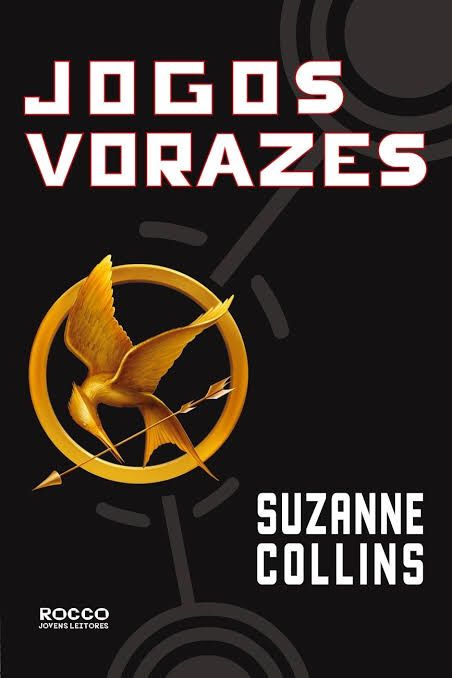
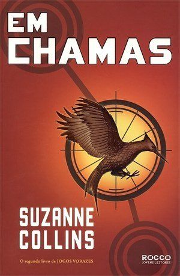
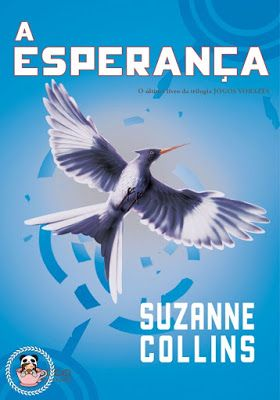
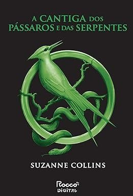
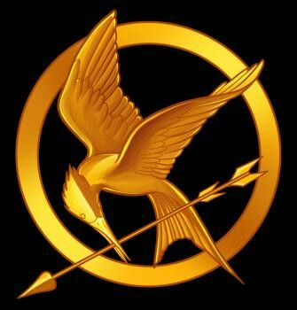
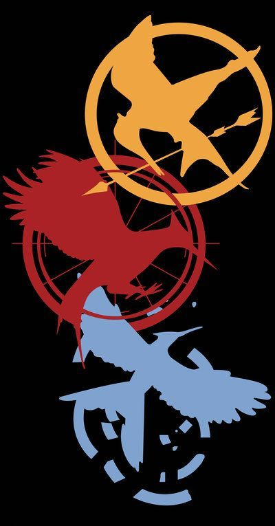
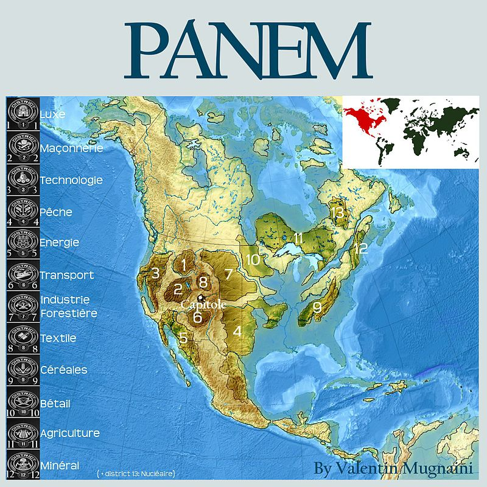
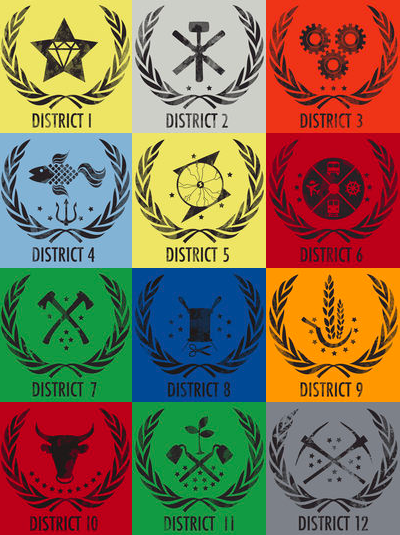

Esta página é dedicada ás imagens e/ou representações gráficas sobre o universo de Jogos vorazes
Capas dos livros:
Primeiro Volume: Jogos vorazes

Segundo volume: Em Chamas

Terceiro volume: A Esperança

Preludio: A Cantiga dos passaros e das serpentes

mapas e símbolos:
Simbolo-tordo

Simbolos da trilogia

Mapa de Panem

Distritos de panem
